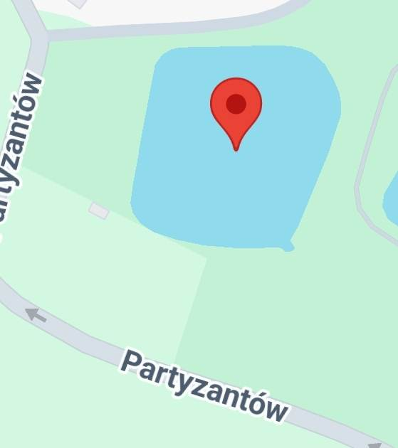

Odnowa Basenu
tak, odnowa basenu
-
Głowne Cele ~
Czyszczenie i konserwacja
-
Naprawa uszkodzeń
-
Malowanie i renowacja
Lokalizacja Basenu (zdjęcie)

-
Czyszczenie i konserwacja: zabrudzenia, pył i delikatne środki różne śmieci.
-
Naprawa uszkodzeń: Wszystkie Widoczne uszkodzenia, takie jak pęknięcia, dziury lub złamane elementy
-
Malowanie i renowacja: Nadanie basenowi nowego życia, przemalowanie budynku farbą na zewnątrz
Odnowa Basenu
Prawdopodbny budżet
-
Wydatki ~ 25480 polskich złotych
Czyszczenie i konserwacja: 2580 polskich złotych
-
Naprawa uszkodzeń: 18900 polskich złotych
-
Malowanie i renowacja: 4000 polskich złotych